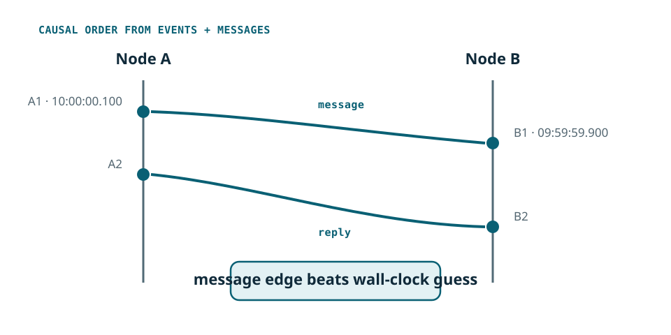

Coordination I — Time, Events, and Causality — Lesson
Part II — Communication and Coordination
Guiding question: If clocks disagree, how can you still reason about what happened before what?
Before you read
Section titled “Before you read”Node B logs a receive at 09:59:59.900 for a message Node A says it sent at 10:00:00.100. Which fact do you trust: the timestamps or the message edge?
Write a short answer first. You are not expected to be correct yet; you need a prediction you can revise as the chapter gives you better models and evidence.
Use what you already know: Message traces and request identifiers from the communication chapters.
Workload map
Section titled “Workload map”Practice / challenge bank: The guided-practice and knowledge-check pages identify the exact core cases. The remaining cases, optional extensions, and advanced references are not part of the core workload unless your instructor assigns them.
OFFLINEDownload lesson + practice + lab for offline study (.zip · 63 KB)
Why this chapter matters
Section titled “Why this chapter matters”Logs tempt us to believe that timestamps tell the story.
10:00:01.120 node A sent request
10:00:01.115 node B received requestDid B receive the request before A sent it?
Almost certainly not. The clocks disagree.
Distributed systems do not share one perfect physical clock. Messages take time, clocks drift, synchronization is imperfect, and clock corrections can change the mapping between local time and real time.
Yet algorithms still need to answer questions such as:
- Did event X causally influence event Y?
- Were two updates concurrent?
- Which message must be processed first?
- Can this trace be consistent with the protocol?
- Is one version descended from another?
The guiding question is:
If clocks disagree, how can we still reason about what happened before what?
The answer begins by separating physical time from causal order.
1. Physical clocks measure time locally
Section titled “1. Physical clocks measure time locally”Each machine has a clock maintained by hardware and operating-system mechanisms.
Even if two clocks are initially synchronized, they do not run at exactly identical rates forever.
A useful model is:
real time t
↓
clock A reports C_A(t)
clock B reports C_B(t)If the clocks have different rates, the offset between them changes.
Offset and drift
Section titled “Offset and drift”Clock offset describes how far one clock’s current reading differs from another reference.
Clock drift/skew describes how clock rates differ over time.
Synchronization protocols can periodically reduce offset, but they cannot make communication instantaneous or measurements perfect.
2. Network delay creates uncertainty in clock synchronization
Section titled “2. Network delay creates uncertainty in clock synchronization”Suppose client C asks time server S for the current time.
C -- request --> S
C <-- time ----- SIf the round trip takes 100 ms, C does not know exactly how much of that delay occurred before versus after the server’s timestamp.
A simple synchronization algorithm can estimate using assumptions such as symmetric delay, but variable queueing makes the true error uncertain.
This is why physical-clock synchronization should be discussed with an error bound or assumption, not as perfect equality.
3. NTP improves clocks but does not create a global transaction order
Section titled “3. NTP improves clocks but does not create a global transaction order”Network Time Protocol is widely used to synchronize clocks in real systems.
It is valuable for:
- human-readable logs;
- certificate validity;
- operational monitoring;
- approximate event correlation;
- time-based policies.
But synchronized wall clocks alone are not a universal mechanism for ordering distributed state transitions.
Reasons include:
- residual synchronization error;
- asymmetric network delay;
- drift between synchronization events;
- clock corrections;
- events occurring closer together than the uncertainty bound.
A system that requires causal or consistency guarantees needs a mechanism designed for those guarantees.

4. Wall-clock corrections can surprise programs
Section titled “4. Wall-clock corrections can surprise programs”Civil/wall time may be corrected when synchronization discovers that the local clock is wrong.
A clock can be adjusted gradually or, under some circumstances, appear to jump.
This creates two distinct needs:
Human time
Section titled “Human time”“What UTC time did this event approximately happen?”
Duration measurement
Section titled “Duration measurement”“How long did this operation take?”
Operating systems therefore commonly expose monotonic time sources suitable for measuring elapsed duration even when wall time is corrected.
This distinction is important in labs:
Use monotonic duration measurements for latency. Use wall-clock timestamps for approximate cross-system correlation, with known limitations.
5. Causality asks a different question from clock time
Section titled “5. Causality asks a different question from clock time”Leslie Lamport’s influential insight was that many distributed algorithms do not need to know exact physical time. They need to know whether one event could have influenced another.
Define the happened-before relation, written conceptually as:
a → bwhen any of these rules apply.
Rule 1 — local program order
Section titled “Rule 1 — local program order”If events a and b occur in the same process and the process executes a before b, then:
a → bRule 2 — message order
Section titled “Rule 2 — message order”If a is sending a message and b is receiving that same message:
a → bRule 3 — transitivity
Section titled “Rule 3 — transitivity”If:
a → b
b → cthen:
a → cThis gives us a partial order independent of synchronized physical clocks.
6. Concurrency means neither event causally precedes the other
Section titled “6. Concurrency means neither event causally precedes the other”If neither:
a → bnor:
b → acan be established, then the events are concurrent in the causal sense.
Write:
a || bConcurrency does not necessarily mean the events occurred at exactly the same physical instant.
It means the execution contains no causal path connecting them.
This is a powerful change in perspective.
Suppose two disconnected replicas each accept a write. One physical write may have happened five seconds earlier, but if neither replica knew about the other write, the updates can still be causally concurrent.
7. A causal graph is often more truthful than a timestamp-sorted log
Section titled “7. A causal graph is often more truthful than a timestamp-sorted log”Consider:
P1: a ---- send m ---------------- d
\
P2: b ---- receive m ---- c ---- send n
\
P3: e ---- receive n ---- fRelevant relations include:
a → send(m)
send(m) → receive(m)
receive(m) → c
c → send(n)
send(n) → receive(n)
receive(n) → fTransitivity gives many additional relationships.
But an event on P1 after send(m) may still be concurrent with an unrelated event on P3 before receive(n) depending on the graph.
Sorting wall-clock timestamps can destroy this structure when clocks disagree.
8. Lamport clocks encode happened-before in scalar logical time
Section titled “8. Lamport clocks encode happened-before in scalar logical time”A Lamport clock gives each process a logical counter.
Basic rules:
- Increment the local counter before each relevant local event.
- Include the current logical timestamp when sending a message.
- On receiving timestamp
T, set:
clock = max(local_clock, T) + 1This ensures:
If
a → b, thenL(a) < L(b).
That property is extremely useful.
But the converse is not true.
If:
L(a) < L(b)we cannot conclude that a → b.
Two concurrent events can receive different Lamport timestamps.
9. Worked example — Lamport clocks
Section titled “9. Worked example — Lamport clocks”Three processes start with logical clock 0.
P1: local a, send m to P2
P2: local b, receive m, send n to P3
P3: local c, receive nOne valid computation:
a: L=1
send m: L=2 message carries 2b: L=1
receive m carrying 2:
L=max(1,2)+1=3
send n: L=4 message carries 4c: L=1
receive n carrying 4:
L=max(1,4)+1=5We correctly obtain:
send(m)=2 < receive(m)=3
receive(m)=3 < send(n)=4 < receive(n)=5Notice that P1:a and P2:b both have timestamp 1. Equal Lamport values do not mean the same event or simultaneous execution.
10. Lamport clocks cannot identify concurrency by themselves
Section titled “10. Lamport clocks cannot identify concurrency by themselves”Suppose:
P1 event a: L=4
P2 event b: L=9Can we conclude a → b?
No.
The counters may have advanced independently.
Lamport clocks give a scalar ordering consistent with causality, but they do not preserve enough information to decide whether two differently stamped events are causally related.
This motivates vector clocks.
11. Vector clocks record per-process causal knowledge
Section titled “11. Vector clocks record per-process causal knowledge”For N processes, a vector clock contains N counters.
With three processes:
[V1, V2, V3]Process Pi increments its own component when it performs an event.
On message send, the vector travels with the message.
On receive, the process merges component-wise maxima and then increments its own component.
Conceptually:
V_local = max_componentwise(V_local, V_message)
V_local[i] += 1The exact event-increment convention must be applied consistently.
12. Vector comparison distinguishes causality and concurrency
Section titled “12. Vector comparison distinguishes causality and concurrency”For vectors A and B, define:
A < Bwhen every component of A is less than or equal to the corresponding component of B and at least one component is strictly smaller.
Then:
A < B => event A causally precedes event BIf neither vector is component-wise less than the other, the events are concurrent.
Example:
A = [3,1,0]
B = [2,4,0]A knows more about process 1; B knows more about process 2.
Neither dominates.
Therefore:
A || BThis is information a scalar Lamport clock cannot preserve.
13. Worked example — concurrent replica writes
Section titled “13. Worked example — concurrent replica writes”Two replicas begin from common version:
A: [1,0]
B: [1,0]Then they disconnect.
A performs a write:
A version = [2,0]B performs an independent write:
B version = [1,1]Compare:
[2,0]
[1,1]Neither dominates the other.
The versions are concurrent.
This does not automatically tell the application how to resolve the conflict. It tells the application that neither version is simply a causal descendant of the other.
That distinction becomes central in eventual consistency and Dynamo-style systems.
14. Logical clocks order knowledge, not physical duration
Section titled “14. Logical clocks order knowledge, not physical duration”A Lamport timestamp difference of 100 does not mean 100 milliseconds.
A vector component of 50 does not mean the process has run for 50 seconds.
Logical clocks capture event-order information.
Do not use them to estimate latency.
Likewise, physical clocks estimate real-world time but do not automatically capture causality.
Different clock mechanisms answer different questions.
15. Total ordering can be constructed when an application needs one
Section titled “15. Total ordering can be constructed when an application needs one”Lamport clocks establish a partial relationship consistent with causality. Some algorithms need a deterministic total order for tie breaking.
One common construction orders by:
(Lamport timestamp, process ID)For example:
(7, P1) < (7, P2)This creates a deterministic total order.
But you must not confuse this artificial tie-breaking order with causality.
If two events were concurrent, ordering them by process ID does not make one causally influence the other.
The system is choosing an order for coordination purposes.
16. Message ordering properties are separate from clock mechanisms
Section titled “16. Message ordering properties are separate from clock mechanisms”A transport or middleware can promise different delivery orders.
FIFO order
Section titled “FIFO order”Messages from one sender are delivered to one receiver in send order.
Causal order
Section titled “Causal order”If message/event A causally precedes B, recipients should not observe B before the relevant A.
Total order
Section titled “Total order”All recipients observe messages in one common order.
These are different guarantees.
Logical clocks can help implement or reason about ordering protocols, but adding a timestamp does not by itself make the network deliver messages in that order.
The protocol still needs buffering, coordination, or another mechanism.
17. Causal consistency uses happened-before to constrain replicas
Section titled “17. Causal consistency uses happened-before to constrain replicas”Imagine:
- Alice posts
A. - Bob reads
A. - Bob posts
Bsaying “I agree with A.”
There is a causal relation:
A → Bob reads A → BA causally consistent system should avoid showing B to a user who cannot yet observe A when the application semantics require preserving that dependency.
However, an unrelated post C may be concurrent with both and need not be ordered the same way everywhere.
This lets systems preserve meaningful dependency while avoiding unnecessary global ordering.
Chapter 9 and Chapter 9 return to this design space.
18. Logs need clocks plus identifiers plus topology
Section titled “18. Logs need clocks plus identifiers plus topology”A useful distributed trace record might include:
node_id
process/incarnation
request_id
trace_id/span_id
event_type
wall_time
monotonic_since_start
Lamport time or vector metadata when the experiment requires it
peer/message IDNo single field tells the complete story.
Wall time
Section titled “Wall time”Useful for approximate human chronology.
Monotonic local duration
Section titled “Monotonic local duration”Useful for measuring elapsed time within one process.
Request/trace IDs
Section titled “Request/trace IDs”Useful for correlating one workflow.
Logical time
Section titled “Logical time”Useful for reconstructing causal ordering when physical clocks disagree.
Good observability uses the minimum evidence needed for the question.
19. Worked example — contradictory wall clocks
Section titled “19. Worked example — contradictory wall clocks”Suppose logs say:
A 10:00:02.400 send R7 to B
B 10:00:02.250 receive R7 from AWall-clock sorting suggests receive before send.
But message identity establishes:
send(R7) → receive(R7)If A stamps the message with Lamport time 14 and B receives at logical time 20, the causal relation remains consistent even though wall clocks are offset.
The correct analysis is not “fix the log by sorting differently.” It is to recognize which evidence has authority for which claim.
20. Worked example — reconstructing a three-process execution
Section titled “20. Worked example — reconstructing a three-process execution”Events:
P1: a, send m, d
P2: b, receive m, c, send n
P3: e, receive n, fQuestions:
- Is
a → c? Yes, through local/send/receive order. - Is
b → send(m)? No causal path is given. - Is
d → f? Not necessarily. - Is
c → f? Yes, through send/receive n. - Are
dandeconcurrent? Possibly, depending on other messages not shown.
The important skill is to justify each answer through a path, not by visual left-to-right placement alone.
21. Logical clocks do not solve clock-based leases by themselves
Section titled “21. Logical clocks do not solve clock-based leases by themselves”Leases and deadlines often need a notion of elapsed real time.
Lamport clocks cannot tell us that 15 seconds passed.
This is why distributed systems may need several time concepts simultaneously:
- monotonic physical duration for local expiration;
- approximately synchronized wall time for operational context;
- logical time for causality;
- protocol epochs/terms for authority changes.
Later, Raft terms will behave as logical epochs, not wall-clock timestamps.
22. Causality grows metadata
Section titled “22. Causality grows metadata”Lamport clocks use one scalar.
Classical vector clocks use one component per participant.
In a system with millions of dynamic clients, a full vector per client can be impractical.
Real systems therefore use variants and compromises:
- version vectors over replicas rather than clients;
- dotted version vectors;
- hybrid logical clocks;
- bounded metadata with weaker guarantees;
- centralized sequencing where appropriate.
The course begins with clean Lamport/vector models because they expose the fundamental information trade-off.
The larger principle is:
To distinguish more kinds of history, the system must retain more information or perform more coordination.
23. Historical perspective — 1978 and a foundational paper
Section titled “23. Historical perspective — 1978 and a foundational paper”Lamport’s 1978 paper Time, Clocks, and the Ordering of Events in a Distributed System is foundational because it reframed time as an ordering problem.
The paper connected logical event ordering with synchronization and distributed-state reasoning, and its happened-before relation remains part of the vocabulary of modern distributed systems.
Vector-clock work later strengthened the ability to distinguish causal history from concurrency.
The historical lesson is not that physical clocks became irrelevant. It is that physical time and causal order are different abstractions and should not be confused.
24. Common mistakes
Section titled “24. Common mistakes”Mistake 1 — sort logs by wall-clock timestamp and call that causality
Section titled “Mistake 1 — sort logs by wall-clock timestamp and call that causality”Clock offset can reverse the apparent order of message send/receive events.
Mistake 2 — assume NTP makes clocks identical
Section titled “Mistake 2 — assume NTP makes clocks identical”Synchronization reduces error; it does not remove uncertainty.
Mistake 3 — use wall time for duration measurement without considering adjustments
Section titled “Mistake 3 — use wall time for duration measurement without considering adjustments”Prefer monotonic timing for elapsed durations.
Mistake 4 — infer causality from Lamport timestamp comparison in both directions
Section titled “Mistake 4 — infer causality from Lamport timestamp comparison in both directions”a → b implies L(a) < L(b), but L(a) < L(b) does not prove a → b.
Mistake 5 — treat concurrent as physically simultaneous
Section titled “Mistake 5 — treat concurrent as physically simultaneous”Concurrent means no causal path is known in the execution model.
Mistake 6 — sort vector clocks lexicographically
Section titled “Mistake 6 — sort vector clocks lexicographically”Vector ordering is component-wise dominance, not ordinary tuple sorting.
Mistake 7 — attach a logical timestamp and assume delivery becomes ordered
Section titled “Mistake 7 — attach a logical timestamp and assume delivery becomes ordered”Timestamps carry information; protocols enforce delivery/order policies.
Mistake 8 — use Lamport clocks to measure elapsed seconds
Section titled “Mistake 8 — use Lamport clocks to measure elapsed seconds”Logical counter distance is not physical duration.
25. Connection to Chapter 4 and Chapter 8
Section titled “25. Connection to Chapter 4 and Chapter 8”Chapter 4 introduced request IDs and local timestamps for correlating RPC attempts.
Chapter 6 adds causal structure:
client send R7
↓
server receive R7
↓
server sends call R8
↓
downstream receive R8Even if each machine’s wall clock disagrees, message edges establish happened-before relationships.
Chapter 8 introduced worker incarnations and changing membership. Logical/version metadata helps distinguish newer state from delayed older observations.
The course is progressively enriching each trace:
Warm-up: observable events
Chapter 4: logical request identity
Chapter 8: node identity/incarnation
Chapter 6: causal ordering
Chapter 12: full distributed tracing/performance diagnosisLaboratory transition
Section titled “Laboratory transition”The Chapter 6 lab instruments a multi-process message exchange with intentionally skewed wall-clock displays, Lamport clocks, and then vector clocks. You reconstruct causality from message edges, identify concurrent events, and demonstrate an execution where timestamp sorting by wall time gives the wrong story.
The final artifact should include both:
physical-time viewand:
causal graph / logical-time viewwith an explanation of why they answer different questions.
Chapter summary
Section titled “Chapter summary”- Distributed nodes do not share one perfect physical clock.
- Clock synchronization reduces error but does not erase network-delay uncertainty.
- Wall time and monotonic duration solve different problems.
- Happened-before defines causality from local order, message edges, and transitivity.
- Concurrent events have no causal path between them, even if their physical times differ.
- Lamport clocks assign scalar logical time consistent with happened-before.
- Lamport timestamp order alone cannot prove causality.
- Vector clocks retain enough per-process knowledge to distinguish many causal and concurrent histories.
- Logical clocks carry ordering information; they do not measure physical duration or enforce delivery order by themselves.
- A good distributed trace combines identities, message edges, appropriate physical timing, and logical ordering information.
- Different distributed mechanisms need different concepts of time: elapsed duration, wall time, causality, and logical epochs.
- Reasoning about what happened before what is possible even when the machines disagree about what time it was.